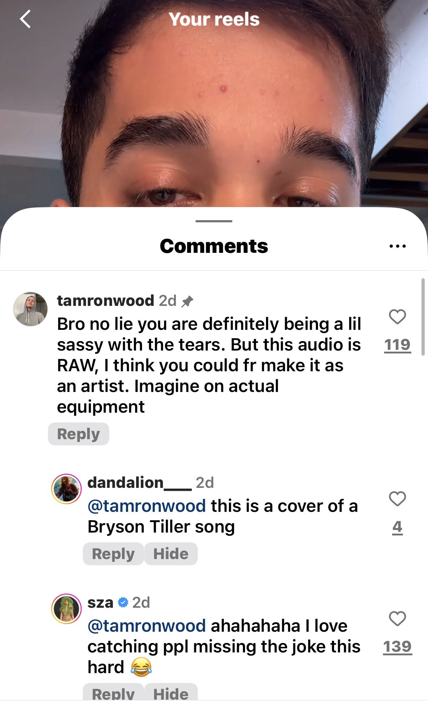

Official Release Poster
King of Fremont — The Film
King of Fremont is the untold story of a mysterious solo artist from Fremont who quietly built one of the internet's most staggering underground rises. With 100M+ views, viral reach, and real engagement from global superstars, this documentary unpacks how a quiet outsider turned heads at the top without industry backing, press, or explanation. Part myth, part truth, part breakdown, part breakthrough — this is the raw, unfiltered story of the popular loner who cracked the system while no one was looking.
Feature Documentary
The Project, Documented
Central to this site is the documentary itself - an unvarnished look at the work, the solitude, and the reach of an artist who engineered momentum from Fremont to a global audience.
Documentary Stills
Selected frames that capture the process, environments, and visual language of the film.


Content Strategy
The Chessboard Pattern
A structured Instagram grid where each post was planned as part of a sequence. The pattern tested timing, narrative continuity, and audience response.
A deliberate order of posts created context and momentum over time.
Engagement and feedback were monitored to guide the next moves.
A documented approach that can be reused for future campaigns.

Industry Signal
The Weeknd Repost
A public repost expanded reach and provided a credible, third-party acknowledgment.
- Expanded visibility beyond the local audience.
- Demonstrated resonance with established artists.
- Served as a clear, public receipt.
Public Feedback
SZA's Comment
SZA left a public comment on the release, providing a verifiable acknowledgment.
- Confirms the work reached top-tier artists organically.
- Adds a public record of engagement.
- Supports the documented impact alongside other receipts.



Engineering Project
Myoelectric Bionic Hand Prototype
A six-year, self-driven build: forearm sensors captured muscle signals, software mapped intent, and a 3D-printed hand executed precise movement.
Surface sensors read forearm activity and translated it into control signals.
3D-printed frame, stepper motors, and tendon-like strings produced motion.
Custom code mapped electrical patterns to individual finger actions.
Data + Creativity Approach
A personal framework for applying data-driven thinking to creative output. This work is a hobby alongside a primary career in data science.
Data Discipline
MS in Computational Data Science. Experiments and iteration guided creative decisions.
Creative Craft
Film, music, and visual work produced independently with limited resources.
Distribution Strategy
Release timing and format were planned to maximize clarity and engagement.
Highlights & Receipts
A concise snapshot of outcomes, backed by public screenshots.

Rolling Loud Comment
Festival account acknowledgment captured in-thread.

Rapmusic Feature
Repost from rapmusic's feed, captured publicly.

TikTok Profile
Profile screenshot showing 100K+ followers.
Organic reach across platforms.
Sustained engagement across releases.
Computational Data Science.
Collaboration experience on professional releases.
Professional Summary
Rohan Chaudri is a data scientist by profession. King of Fremont is his independent creative hobby, documented here to show the strategy, execution, and measurable outcomes. The project highlights disciplined planning, engineering fluency, and the ability to communicate a complex narrative to a broad audience.
Data scientist with an independent creative practice.